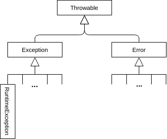

Très pratique car permet d'écrire du code plus lisible, non pollué par la gestion des cas d'erreur.
Le mécanisme des exceptions utilise 5 mots-clés du langage :
try, catch, finally, throw et throws.
Sans les exceptions :
fonction ContenuDuFichier(String filename){
ouvrirFichier(filename)
si erreur d'ouverture
return null
String contentu = lireFichier
Si erreur de lecture
return null
return contenu
}
Avec les exceptions :
fonction ContenuDuFichier(String filename){
try{
ouvrirFichier(filename)
String contentu = lireFichier
return contenu
}
catch(ErreurOuverture e){
return null
}
catch(ErreurLecture e){
return null
}
}
Le programme s'exécute ; si une instruction déclenche une exception, l'exécution s'arrête et continue dans le bloc catch correspondant au type d'exception.
En plus de
try et catch, on peut définir un bloc finally, qui va s'exécuter dans tous les cas, qu'une exception ait été lancée ou pas.
Le bloc
finally est exécuté même si une exception est propagée ; utile par exemple pour fermer une connexion réseau ou à une base de données.
catch et finally sont optionnels, mais au moins un des deux est nécessaire.
Les accolades sont obligatoires dans ces blocs, même s'ils ne contiennent qu'une ligne.
try {
// instructions
} catch(ExceptionType1 e){
// traitement de ce cas anormal de type ExceptionType1
// e est de type ExceptionType1
}
catch(ExceptionType2 e){
// traitement de ce cas anormal de type ExceptionType2
// e est de type ExceptionType2
}
finally {
traitement de fin de bloc try
}
Une même clause catch peut gérer plusieurs types d'exception, en les séparant par |.
try{
...
}
catch(ExceptionType1 | ExceptionType2 e){
// la variable e est un objet de type ExceptionType1 ou ExceptionType2
}
Les classes d'exception
Les exceptions que l'on peut lancer ou attrapper sont des objets de typejava.lang.Exception ou de ses sous-classes.
L'API java fournit un grand nombre de classes : 
On distingue 2 types principaux d'exceptions :
- les exceptions vérifiées (checked exceptions), qui peuvent être anticipées et doivent être gérées par l'application.
- les exceptions non vérifiées (unchecked exceptions), qui ne peuvent pas être anticipées (par ex
OutOfMemoryError).
Les unchecked exceptions descendent de
Error ou de RuntimeException .
Une exception contient un message, accessible via
getMessage().
printStackTrace() est aussi courrament utilisée.
Créer ses propres exceptions
On peut créer des exceptions personnalisées en sous-classantException :
public MyException extends Exception {}
Dans le code qu'on écrit on a le choix entre utiliser Exception et ses sous-classes lorsque c'est pertinent, ou les classes d'exceptions spécifiques à l'application.
Lancer des exceptions
Une exception est "lancée" avec l'instructionthrow lorsqu'une condition anormale d'exécution est rencontrée :
public static double factorial(int x) throws IllegalArgumentException{
if(x < 0){
throw new IllegalArgumentException("x must be >= 0");
}
double fact;
for(fact=1.0; x > 1; fact *= x, x--)
; // instruction vide
return fact;
}
(code dans Factorial.java)
Propagation des exceptions
Si l'interpréteur java rencontre une exception, il arrête l'exécution du code et cherche un gestionnaire d'exception (un bloccatch).
L'interpréteur java va remonter la pile d'appel des méthodes jusqu'à ce qu'il trouve un bloc
catch correspondant au type de l'exception en cours ou à une superclasse.
Par exemple, si on se place dans une méthode qui utilise
factorial() :
void maMéthode(){
...
double f = factorial(-5);
...
}
- Soit maMéthode() contient un bloc try catch gérant IllegalArgumentException
void maMéthode(){
try{
...
double f = factorial(-5);
...
}
catch(IllegalArgumentException e){
// gestion de e
}
}
Dans ce cas le code présent dans ce bloc catch sera exécuté.
- Soit
maMéthode() ne gère pas IllegalArgumentException et doit alors obligatoirement déclarer qu'elle est susceptible de lancer une exception avec le mot-clé throws :
void maMéthode throws IllegalArgumentException(){
...
double f = factorial(-5);
...
}
Dans ce cas, l'exception sera propagée à la méthode qui a appelé maMéthode(), ainsi de suite jusqu'à la fonction main().
Donc en général, le code d'une fonction
main() contient un try catch :
public static void main(String[] args) {
try{
}
catch(Exception e){
}
Dans ce cas, on a intérêt à utiliser la classe Exception, qui est la superclasse de toutes les autres exceptions, çe qui permet de rattrapper toute erreur imprévue dans le programme, quelque soit son type.
A noter : les blocs
catch sont évalués les uns après les autres. Le compilateur impose donc que les cas particuliers soient traités d'abord.
void maMéthodeQuiNePassePasALaCompil(){
try{
...
double f = factorial(-5);
...
}
catch(Exception e){
}
catch(IllegalArgumentException e){
}
}
Si ce code passait à la compilation, le catch de IllegalArgumentException ne serait jamais appelé puisque c'est une sous-classe de Exception.
Exercice Multiples2